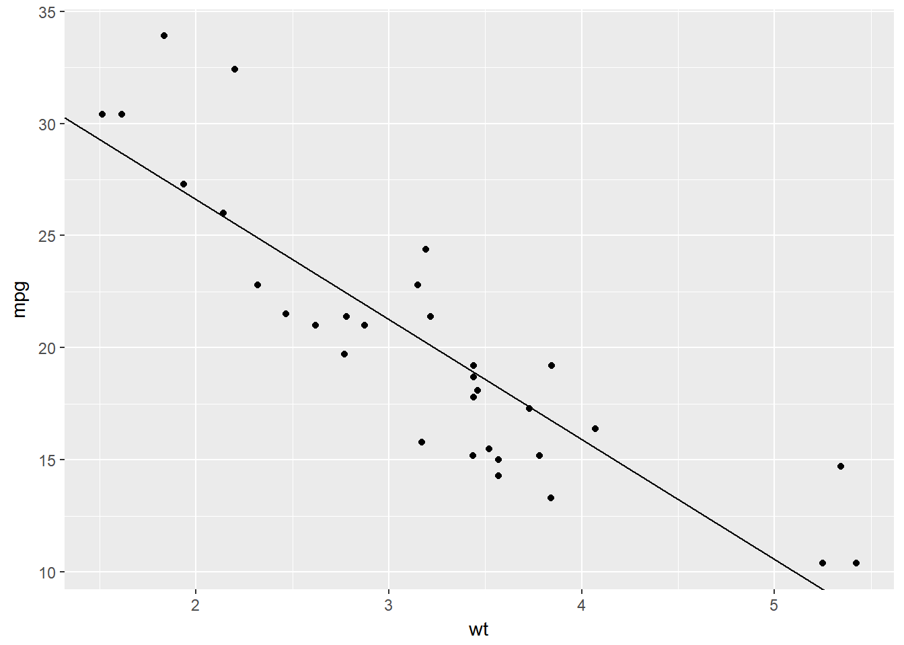
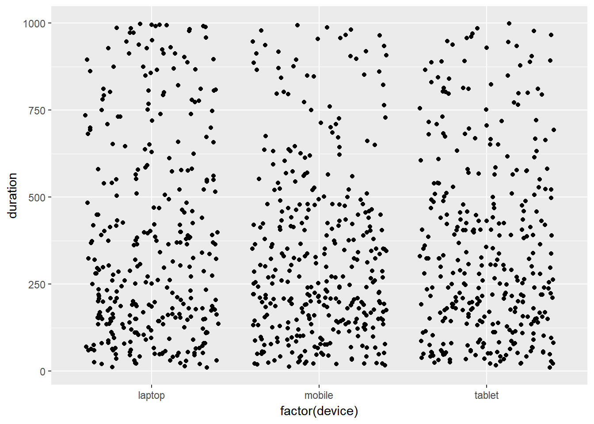
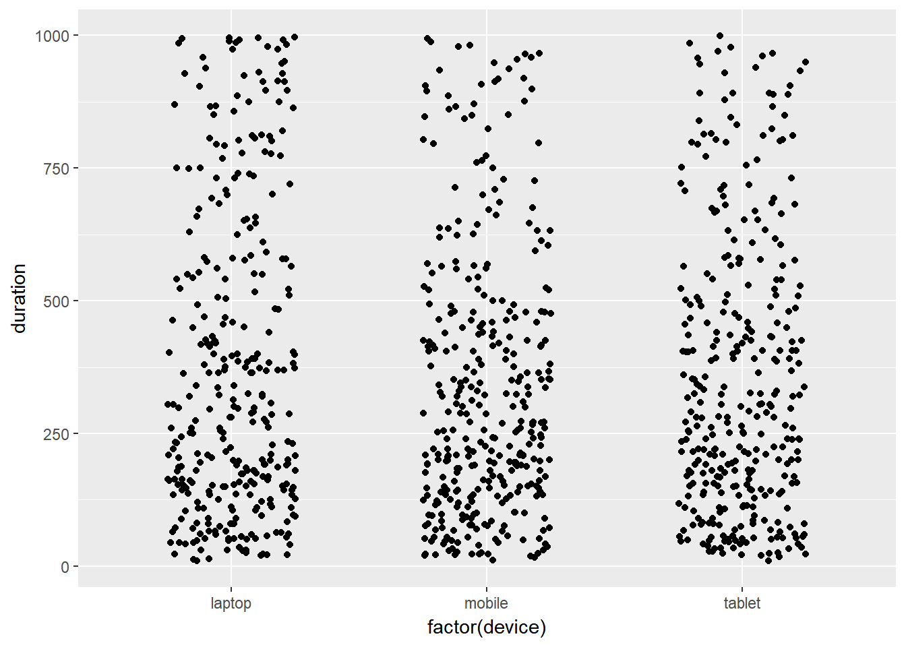

Introduction
This is the third post in the series Elegant Data Visualization with ggplot2. In the previous post, we learnt how to create plots using the qplot() function. In this post, we will create some of the most routinely used plots to explore data using the geom_* functions.
Libraries, Code & Data
We will use the following libraries in this post:
All the data sets used in this post can be found here and code can be downloaded from here.
Data
ecom <- readr::read_csv('https://raw.githubusercontent.com/rsquaredacademy/datasets/master/web.csv')
ecom## # A tibble: 1,000 x 11
## id referrer device bouncers n_visit n_pages duration country
## <int> <chr> <chr> <chr> <int> <dbl> <dbl> <chr>
## 1 1 google laptop true 10 1 693 Czech Republic
## 2 2 yahoo tablet true 9 1 459 Yemen
## 3 3 direct laptop true 0 1 996 Brazil
## 4 4 bing tablet false 3 18 468 China
## 5 5 yahoo mobile true 9 1 955 Poland
## 6 6 yahoo laptop false 5 5 135 South Africa
## 7 7 yahoo mobile true 10 1 75 Bangladesh
## 8 8 direct mobile true 10 1 908 Indonesia
## 9 9 bing mobile false 3 19 209 Netherlands
## 10 10 google mobile true 6 1 208 Czech Republic
## # ... with 990 more rows, and 3 more variables: purchase <chr>,
## # order_items <dbl>, order_value <dbl>Data Dictionary
- id: row id
- referrer: referrer website/search engine
- os: operating system
- browser: browser
- device: device used to visit the website
- n_pages: number of pages visited
- duration: time spent on the website (in seconds)
- repeat: frequency of visits
- country: country of origin
- purchase: whether visitor purchased
- order_value: order value of visitor (in dollars)
Scatter Plot
A scatter plot displays the relationship between two continuous variables. In ggplot2, we can build a scatter plot using geom_point(). Scatterplots can show you visually
- the strength of the relationship between the variables
- the direction of the relationship between the variables
- and whether outliers exist
Point
ggplot(ecom, aes(x = n_pages, y = duration)) +
geom_point()
Regression Line
Fit a regression line or using
geom_abline()geom_smooth()
Regression Line
ggplot(mtcars, aes(x = wt, y = mpg)) +
geom_point() +
geom_abline(intercept = 37.285, slope = -5.344)
Regression Line
ggplot(mtcars, aes(x = wt, y = mpg)) +
geom_smooth(method = 'lm', se = TRUE)Regression Line
ggplot(mtcars, aes(x = wt, y = mpg)) +
geom_smooth(method = 'loess', se = FALSE)Horizontal/Vertical Lines
Add horizontal or vertical lines using
geom_hline()geom_vline()
Horizontal Line
ggplot(mtcars, aes(x = wt, y = mpg)) +
geom_point() +
geom_hline(yintercept = 30) Vertical Line
ggplot(mtcars, aes(x = wt, y = mpg)) +
geom_point() +
geom_vline(xintercept = 5) Bar Plot
Bar plots present grouped data with rectangular bars. The bars may represent the frequency of the groups or values. Bar plots can be:
- horizontal
- vertical
- grouped
- stacked
- proportional
Frequency
ggplot(ecom, aes(x = factor(device))) +
geom_bar()Weight
ggplot(ecom, aes(x = factor(device))) +
geom_bar(aes(weight = order_value))Stacked Bar Plot
ggplot(ecom, aes(x = factor(device))) +
geom_bar(aes(fill = purchase))
Horizontal Bar Plot
ggplot(ecom, aes(x = factor(device))) +
geom_bar(aes(fill = purchase)) +
coord_flip()
Columns
device <- c('laptop', 'mobile', 'tablet')
visits <- c(30000, 12000, 5000)
traffic <- tibble::tibble(device, visits)
ggplot(traffic, aes(x = device, y = visits)) +
geom_col(fill = 'blue') 
Boxplot
- examine the distribution of a variable
- detect outliers, boxplots are very handy
Boxplot
ggplot(ecom, aes(x = factor(device), y = n_pages)) +
geom_boxplot()Add Jitter
ggplot(ecom, aes(x = factor(device), y = n_pages)) +
geom_boxplot() +
geom_jitter()
Histogram
Histograms are used to examine:
- distribution of a continuous variable
- skewness and kurtosis
Histogram
ggplot(ecom, aes(x = duration)) +
geom_histogram()## `stat_bin()` using `bins = 30`. Pick better value with `binwidth`.
Bins
ggplot(ecom, aes(x = duration)) +
geom_histogram(bins = 5)
Line
Line charts are used to examine trends over time.
Data
gdp <- readr::read_csv('https://raw.githubusercontent.com/rsquaredacademy/datasets/master/gdp.csv')## Warning: Missing column names filled in: 'X1' [1]gdp## # A tibble: 6 x 6
## X1 X year growth india china
## <int> <int> <date> <int> <int> <int>
## 1 1 1 2000-01-01 6 5 8
## 2 2 2 2001-01-01 9 9 5
## 3 3 3 2002-01-01 8 8 6
## 4 4 4 2003-01-01 9 8 8
## 5 5 5 2004-01-01 9 5 9
## 6 6 6 2005-01-01 8 7 8Line Chart
ggplot(gdp, aes(year, india)) +
geom_line()
Line Color & Type
ggplot(gdp, aes(year, india)) +
geom_line(color = 'blue', linetype = 'dashed')Jitter
ggplot(ecom, aes(x = factor(device), y = duration)) +
geom_jitter()
Jitter Width & Height
ggplot(ecom, aes(x = factor(device), y = duration)) +
geom_jitter(width = 0.25, height = 0.5)
Label
ggplot(mtcars, aes(disp, mpg, label = rownames(mtcars))) +
geom_label()
Text
ggplot(mtcars, aes(disp, mpg, label = rownames(mtcars))) +
geom_text(check_overlap = TRUE, size = 2)
Text
ggplot(mtcars, aes(x = disp, y = mpg, label = rownames(mtcars))) +
geom_point() +
geom_text(aes(color = cyl), hjust = 0, nudge_x = 0.05,
size = 2, angle = 45)